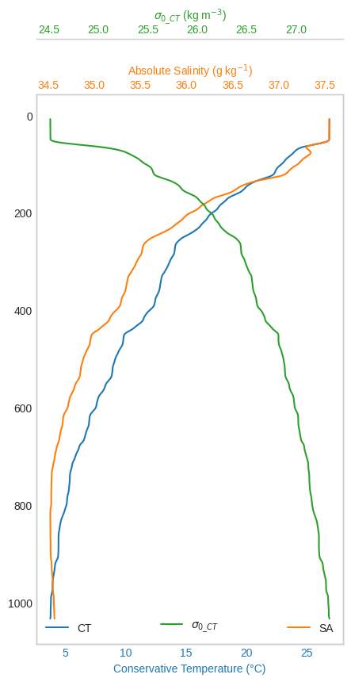

Quick introduction¶
Reading and plotting¶
[1]:
import io
import requests
from pathlib import Path
def download_demo_file(url):
if not Path("CTD-spiked-unfiltered.cnv.bz2").exists():
response = requests.get(url, allow_redirects=True)
try:
response.raise_for_status()
except requests.exceptions.HTTPError as err:
raise requests.exceptions.HTTPError(f"{response.content.decode()}") from err
data = io.BytesIO(response.content)
data.seek(0)
Path("CTD-spiked-unfiltered.cnv.bz2").write_bytes(data.read())
url = "https://github.com/pyoceans/python-ctd/raw/main/tests/data/CTD-spiked-unfiltered.cnv.bz2"
download_demo_file(url)
[2]:
import ctd
cast = ctd.from_cnv("CTD-spiked-unfiltered.cnv.bz2")
down, up = cast.split()
down.head()
[2]:
| scan | timeS | t090C | t190C | c0S/m | c1S/m | sbeox0V | par | spar | ph | ... | longitude | pumps | pla | sbeox0PS | sbeox0Mm/Kg | dz/dtM | accM | flSP | xmiss | flag | |
|---|---|---|---|---|---|---|---|---|---|---|---|---|---|---|---|---|---|---|---|---|---|
| Pressure [dbar] | |||||||||||||||||||||
| 6.433 | 1.0 | 0.000 | 26.9647 | 26.9314 | 5.821803 | 5.800920 | 2.1099 | 1.000000e-12 | 0.0000 | 8.575 | ... | -37.22588 | False | 26.970 | 69.61016 | 137.397 | 0.000 | 0.00 | 0.16484 | 99.2996 | False |
| 6.448 | 2.0 | 0.042 | 26.9644 | 26.9307 | 5.821615 | 5.800819 | 2.1148 | 1.000000e-12 | 1.9601 | 8.580 | ... | -37.22588 | False | 26.969 | 69.82216 | 137.817 | 0.351 | 8.43 | 0.16484 | 99.3260 | False |
| 6.433 | 3.0 | 0.083 | 26.9642 | 26.9301 | 5.821421 | 5.800727 | 2.1209 | 1.000000e-12 | 0.0000 | 8.575 | ... | -37.22588 | False | 26.969 | 70.08688 | 138.341 | -0.351 | -16.87 | 0.16606 | 99.3260 | False |
| 6.448 | 4.0 | 0.125 | 26.9639 | 26.9296 | 5.821264 | 5.800727 | 2.1270 | 1.000000e-12 | 0.0000 | 8.575 | ... | -37.22588 | False | 26.969 | 70.35184 | 138.865 | 0.351 | 16.86 | 0.16606 | 99.3260 | False |
| 6.433 | 5.0 | 0.167 | 26.9640 | 26.9291 | 5.821219 | 5.800634 | 2.1331 | 1.000000e-12 | 0.0000 | 8.575 | ... | -37.22588 | False | 26.969 | 70.61657 | 139.388 | -0.351 | -16.86 | 0.16606 | 99.3525 | False |
5 rows × 30 columns
It is a pandas.DataFrame with all the pandas methods and properties.
[3]:
type(cast)
[3]:
pandas.core.frame.DataFrame
But with extras for pre-processing and plotting a ocean vertical profiles.
[4]:
%matplotlib inline
from matplotlib import style
style.use("seaborn-whitegrid")
down["t090C"].plot_cast()
down["c0S/m"].plot_cast()
[4]:
<AxesSubplot:xlabel='c0S/m', ylabel='Pressure [dbar]'>

Sometimes it is useful to plot the second variable in a different axis so we can compare the two.
[5]:
ax0 = down["t090C"].plot_cast(label="Temperature (°C)")
ax1 = down["c0S/m"].plot_cast(
ax=ax0,
label="Conductivity (S/m)",
color="orange",
secondary_y=True,
)
ax0.grid(False)
ax1.grid(False)
ax0.legend(loc="lower left")
ax1.legend(loc="lower right");
python-ctd saves of the file metadata in a dictionary to make them easy to access later.
[6]:
metadata = cast._metadata
metadata.keys()
[6]:
dict_keys(['name', 'header', 'config', 'names', 'skiprows', 'time', 'lon', 'lat'])
[7]:
print(metadata["header"])
* Sea-Bird SBE 9 Data File:
* FileName = Z:\CTD_1.hex
* Software Version Seasave V 7.21h
* Temperature SN = 2317
* Conductivity SN = 4010
* Number of Bytes Per Scan = 48
* Number of Voltage Words = 5
* Number of Scans Averaged by the Deck Unit = 1
* Append System Time to Every Scan
* System UpLoad Time = Apr 01 2011 07:26:31
* NMEA Latitude = 17 58.71 S
* NMEA Longitude = 037 13.52 W
* NMEA UTC (Time) = Apr 01 2011 07:26:31
* Store Lat/Lon Data = Append to Every Scan
** Ship: RV Meteor
** Station: 1
** Operator: Ed
* System UTC = Apr 01 2011 07:26:31
*END*
Pre-processing steps¶
Usually the first pre-processing step is to filter the high frequency jitter in the pressure sensor with a low pass filter, here is a zoom in the pressure data (the pandas index) demonstrating it:
[8]:
import matplotlib.pyplot as plt
fig, ax = plt.subplots()
ax.plot(down.index, label="unfiltered")
ax.plot(down.lp_filter().index, label="filtered")
ax.axis([20870, 20930, 557.5, 559])
fig.legend();
Thanks to pandas_flavor we can chain all the pre-processing steps together.
[9]:
down = down[["t090C", "c0S/m"]]
proc = (
down.remove_above_water()
.remove_up_to(idx=7)
.despike(n1=2, n2=20, block=100)
.lp_filter()
.press_check()
.interpolate()
.bindata(delta=1, method="interpolate")
.smooth(window_len=21, window="hanning")
)
proc.head()
[9]:
| t090C | c0S/m | |
|---|---|---|
| 8.0 | 26.975256 | 5.845194 |
| 9.0 | 26.975653 | 5.845291 |
| 10.0 | 26.976037 | 5.845386 |
| 11.0 | 26.976401 | 5.845478 |
| 12.0 | 26.976740 | 5.845565 |
CTD derive¶
Now we can compute all the derived variables.
[10]:
lon, lat = metadata["lon"], metadata["lat"]
lon, lat
[10]:
(-37.22533333333333, -17.9785)
[11]:
import gsw
p = proc.index
SP = gsw.SP_from_C(proc["c0S/m"].to_numpy() * 10.0, proc["t090C"].to_numpy(), p)
SA = gsw.SA_from_SP(SP, p, lon, lat)
SR = gsw.SR_from_SP(SP)
CT = gsw.CT_from_t(SA, proc["t090C"].to_numpy(), p)
z = -gsw.z_from_p(p, lat)
sigma0_CT = gsw.sigma0(SA, CT)
proc = (
proc.assign(SP=SP)
.assign(SA=SA)
.assign(SR=SR)
.assign(CT=CT)
.assign(z=z)
.assign(sigma0_CT=sigma0_CT)
)
[12]:
labels = [
r"Absolute Salinity (g kg$^{-1}$)",
r"Reference Salinity (g kg$^{-1}$)",
"Practical Salinity",
]
ax = proc[["SA", "SR", "SP"]].plot_cast(
figsize=(5.25, 9),
label=labels,
)
ax.set_ylabel("Pressure (dbar)")
ax.grid(True)
ax.legend()
ax.set_title("Salinities");
Last but not least let’s tweak a three line plot with the main variables measured.
[13]:
def make_patch_spines_invisible(ax):
ax.set_frame_on(True)
ax.patch.set_visible(False)
for sp in ax.spines.values():
sp.set_visible(False)
[14]:
fig, ax0 = plt.subplots(figsize=(5, 9))
colors = ["#1f77b4", "#ff7f0e", "#2ca02c"]
ax0.invert_yaxis()
ax1 = ax0.twiny()
ax2 = ax0.twiny()
(l0,) = ax0.plot(proc["CT"], proc.index, color=colors[0], label="CT")
ax0.set_xlabel("Conservative Temperature (°C)")
(l1,) = ax1.plot(proc["SA"], proc.index, color=colors[1], label="SA")
ax1.set_xlabel("Absolute Salinity (g kg$^{-1}$)")
(l2,) = ax2.plot(
proc["sigma0_CT"], proc.index, color=colors[2], label=r"$\sigma_{0\_CT}$"
)
ax2.set_xlabel(r"$\sigma_{0\_CT}$ (kg m$^{-3}$)")
make_patch_spines_invisible(ax2)
ax2.spines["top"].set_position(("axes", 1.1))
ax2.spines["top"].set_visible(True)
ax0.xaxis.label.set_color(l0.get_color())
ax1.xaxis.label.set_color(l1.get_color())
ax2.xaxis.label.set_color(l2.get_color())
ax0.tick_params(axis="x", colors=l0.get_color())
ax1.tick_params(axis="x", colors=l1.get_color())
ax2.tick_params(axis="x", colors=l2.get_color())
ax0.grid(False)
ax1.grid(False)
ax2.grid(False)
ax0.legend(loc="lower left")
ax1.legend(loc="lower right")
ax2.legend(loc="lower center");
